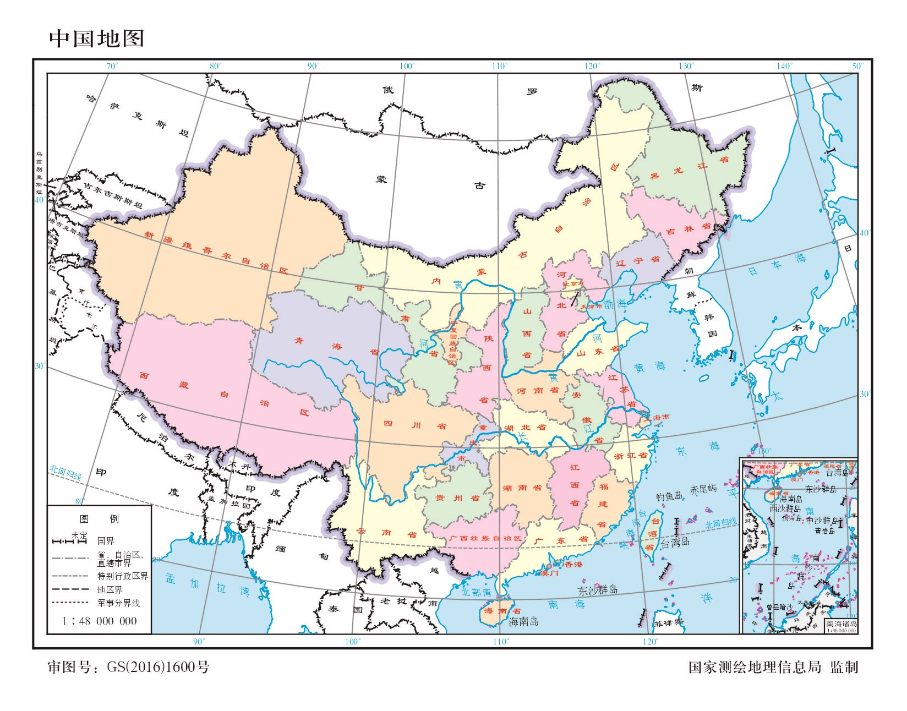

跳到时间轴
千年
纪事
千年纪事
A TIMELINE OF CHINA
近现代
事件目录
资料来源
中国历史时间轴
·
618 — 2026
从唐朝到今天
时间轴连到地图上的地点，随事件查看历史版图与史料。
历史档案
618
—
2026
看地图
↓
历史影响
相关史料图像
放大 ↗
事件地图
历史版图
现代中国
世界位置

放大地图 ↗
历史时间轴
拖动浏览，松手定位到事件。
▶ 播放
1×
1.5×
2×
全览
618
2026
年份
×
事件地图
×
史料图像
×
请启用 JavaScript 使用互动时间轴。